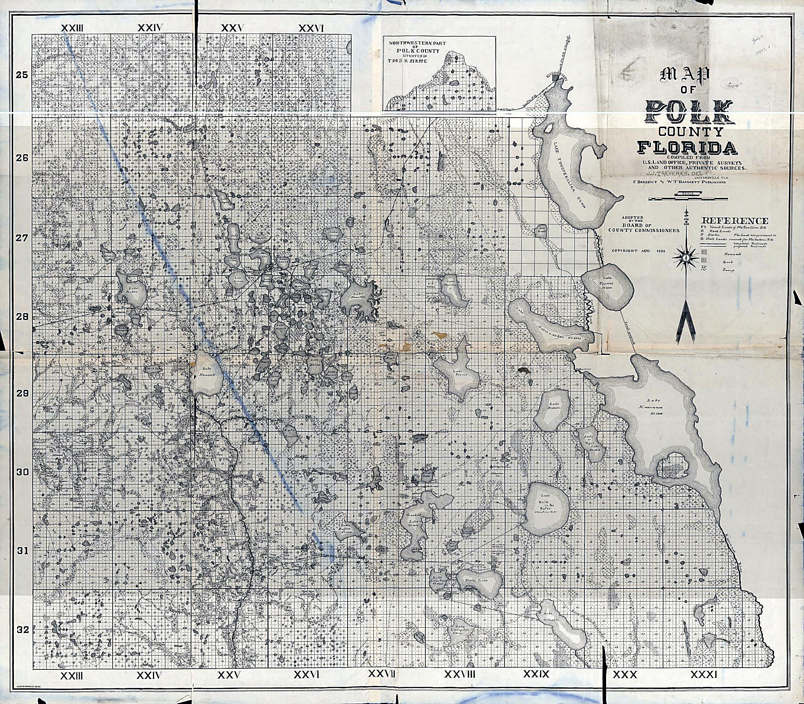

The Lightsey Family: Eight Generations of Cattle, Land, and Conservation in Central Florida
FLH-0320 | Florida Cracker Cattle Pillar | Mini Article
The Lightsey Family
Eight Generations of Cattle, Land, and Conservation in Central Florida

Map of Polk County, Florida, 1883 — the county as it stood during Cornelius B. Lightsey’s active ranching years. Lightly enhanced for clarity (contrast and sharpening only); no content added, removed, or reconstructed.
Source: Library of Congress, Geography & Map Division, item 2012589719. Free to use and reuse; no Rights Advisory statement listed for this item.
On the western shore of Lake Kissimmee, a Florida family has been raising cattle since before the state had a paved road to run them on. The Lightseys trace their Florida ranching tradition to the 1850s — the U.S. Department of Agriculture’s Natural Resources Conservation Service describes the family as running cattle in Central Florida since that decade, with other histories citing 1858 as the more specific starting point. By 1869, when Confederate veteran Cornelius B. Lightsey moved his family from south Georgia into Polk County and went into the cattle business there, the family’s Florida ranching roots were already decades deep. Six generations later, his descendants Cary and Layne Lightsey are still on that same range — and now run one of the most closely watched land-conservation operations in Florida.
From Fort Meade to the Kissimmee Range
Cornelius Lightsey's son, Ulysses “Doc” Lightsey, built the family's cattle interests into a regional force. In partnership with William Henry Lewis, he ran a livery, cattle, and citrus business, and later bought into the Lightsey-Parsons Cattle Company on the Kissimmee River. Doc pushed the valley toward fenced pasture — even posting armed guards to protect his new fence lines from free-range cattlemen — and was known in his day as the “cattle king of Polk County.”
A Debt, and a Turn Toward Conservation
When Cary and Layne Lightsey's father died without a will, the brothers inherited not just the family ranch but a $1.3 million estate-tax bill — more than the land was worth. They rebuilt through lean years and diversified into citrus, hay, and guided hunting on Brahma Island, the largest freshwater island in the United States.
“We’re really just landlords of this land — it’s our job to protect it for the people of Florida.” — Cary Lightsey
That instinct toward stewardship became the family's defining legacy. The Lightseys have placed roughly 90 percent of their land under permanent conservation easement, work that earned Lightsey Cattle Company Audubon Florida's 2016 Sustainable Rancher of the Year award and now links their ranches to the restored Kissimmee River and the statewide Florida Wildlife Corridor.
Today, many people associate the Lightsey name most strongly with Okeechobee — largely thanks to Lightsey's Restaurant, a seafood house operating there since 1977. That connection runs deeper than one restaurant: the family's cattle operations have historically worked the wider region down to the lake itself, not just the Kissimmee prairie core. (The restaurant itself started at the old Okee-Tantie Recreation Area on Lake Okeechobee before relocating inland; its direct link to Cornelius Lightsey's line traced here has not been independently confirmed.)
Quick Facts
| QUICK FACTS | |
| Family in Florida since | 1850s (per USDA NRCS; Polk County move documented 1869) |
| Core region today | Polk, Highlands & Okeechobee counties |
| Generations ranching | 6th–8th generations active today (per family account) |
| Conservation record | ~90% of family land under permanent easement |
| Recognition | Audubon Florida Sustainable Rancher of the Year, 2016 |
Did You Know?
- Brahma Island, owned by the Lightseys in Lake Kissimmee, is the largest freshwater island in the United States and home to up to twenty nesting pairs of bald eagles.
- Cary and Layne Lightsey inherited a $1.3 million estate-tax bill along with their ranch — larger than the land itself was worth at the time.
- Okeechobee's Lightsey's Restaurant started at the Okee-Tantie Recreation Area on Lake Okeechobee — a site Bass Pro Shops has held a redevelopment option on since 2018.
Vocabulary
- Open range — unfenced land where cattle grazed freely and were rounded up rather than pastured.
- Conservation easement — a permanent legal agreement restricting development while typically allowing continued ranching.
Discussion Questions
- How did fencing the open range in the 1890s and placing land under conservation easement a century later both count as acts of stewardship?
- What choices did Cary and Layne Lightsey make to keep the family ranch going after inheriting a debt larger than the land's value?
Related Articles
- FLH-0321 — Ulysses A. “Doc” Lightsey: The Pioneer Cattleman Behind One of the Kissimmee River’s Largest Herds
- FLH-0322 — W. Henry Lewis: Pioneer Cattleman of Fort Meade and the Kissimmee River
Sources
- Spessard Stone, “Ulysses A. Lightsey,” Polk County Historical Quarterly, June 1990.
- Audubon Florida, “Lightsey Cattle Company Presented with Audubon Florida’s 2016 Sustainable Rancher Award.”
- USDA Farmers.gov, “Preserving Old Florida.”
- AGCO FarmLife, “A Legacy of Land,” 2010.
- Florida Trend, “Big Fish,” 2024; Lake Okeechobee News, Okee-Tantie option-extension coverage through March 2026.
Condensed from the companion Full Article (FLH-0320); see that article for full sourcing detail and editorial notes.
© 2026 Wm. E. McMullen, II. Published by L&W Elite Services LLC. Florida Learning Hub is a publishing imprint of L&W Elite Services LLC. © 2026 L&W Elite Services LLC. All rights reserved.
Internal Publishing Block
| FLH Article ID | FLH-0320 |
| Official Title | The Lightsey Family: Eight Generations of Cattle, Land, and Conservation in Central Florida |
| SEO Title | The Lightsey Family: Florida’s Eight-Generation Cattle & Conservation Dynasty |
| Meta Description | Meet the Lightsey family, Florida cattle ranchers since the 1850s, who turned a $1.3 million tax debt into one of the state’s leading land-conservation legacies. |
| Recommended URL Slug | /lightsey-family-florida-cattle-conservation |
| Short Excerpt | Since the 1850s, the Lightsey family has raised cattle on the Kissimmee prairie. Today their descendants Cary and Layne have placed 90% of that land under permanent conservation protection. |
| Pillar / Category | Florida Cracker Cattle |
| Primary Topic Phrase | Lightsey family Florida cattle conservation |
| Illustration Research Package | RESOLVED: 1883 Map of Polk County, Florida (Library of Congress, Geography & Map Division, item 2012589719) — public domain, no Rights Advisory statement. Used as general period context, not as a depiction of Lightsey-owned land (parcel-level ID attempted, not achieved — see Full Article FLH-0320 Image Sourcing Sheet). Companion articles FLH-0321 / FLH-0322 may reuse this map for shared regional context. |